Same layout, same P mark geometry, same Manrope type, same cards and navigation. Only color tokens and the mark's three fill colors change. Every screenshot is the real Expo code from main rendered for the web at 412×915 in Spanish, with the live USGS snapshot from today.
A periwinkle sky that warms into a coral horizon, porcelain-tinted cards, and a storm-blue accent (periwinkle at night). It brings back the cool-to-warm dusk you liked in v0.2 and drops the navy/cyan AI-dashboard look. Coral stays in the sky and the mark, so it never competes with alerts.
The catch: these five candidate colors are close to v0.2's own gradient (steel blue, indigo, violet, coral), which was Hark's sunset. So Crepúsculo is the closest to Hark of the three. What keeps it PanaPulse is the P mark, the bottom nav, Mi zona and the pulse rail, not the gradient. If that bothers you, Tinta is the most distinct.
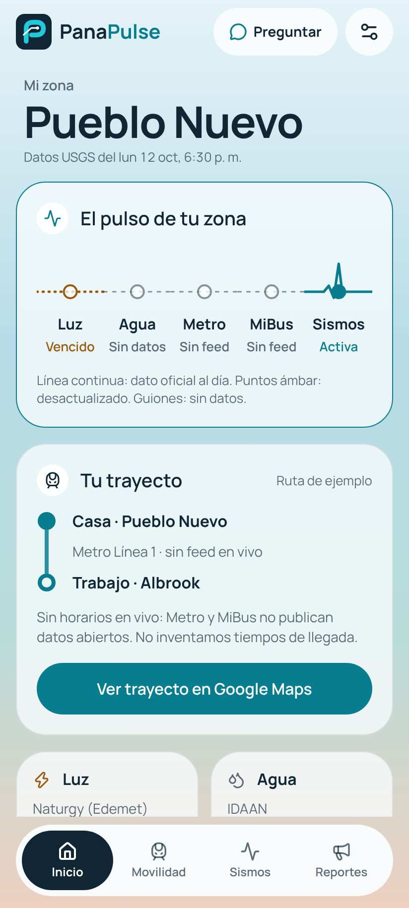
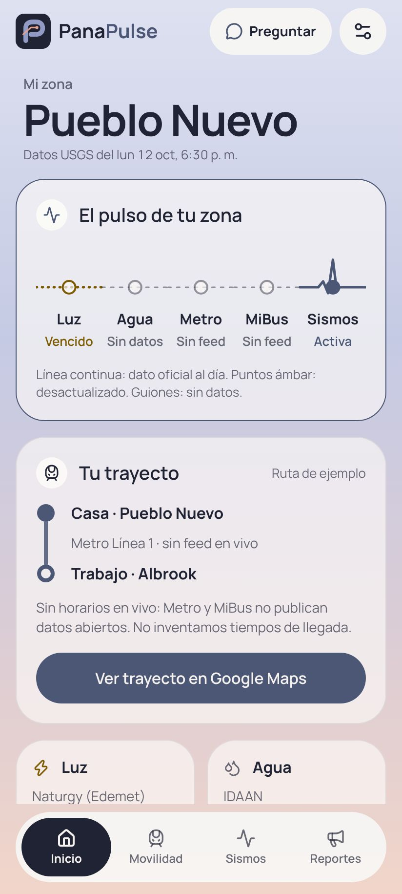
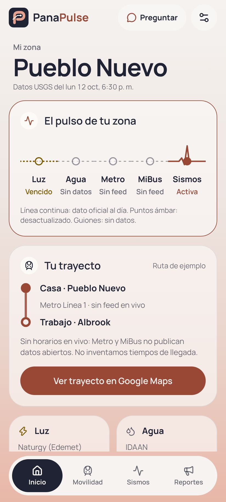
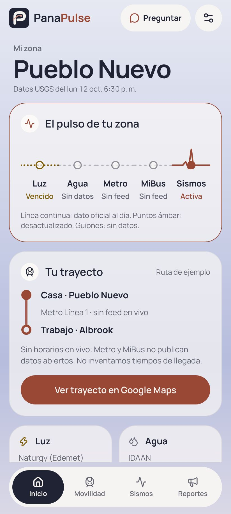
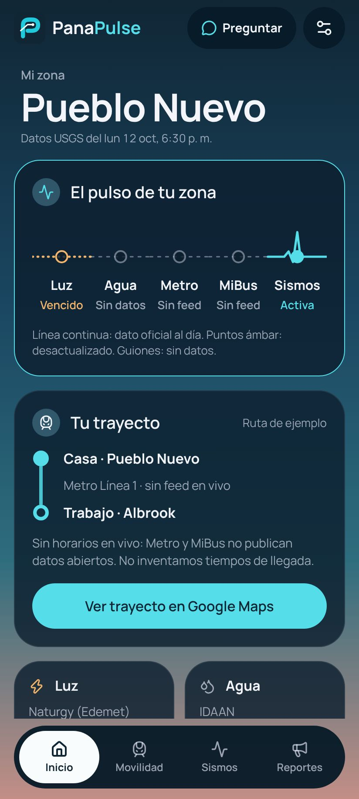
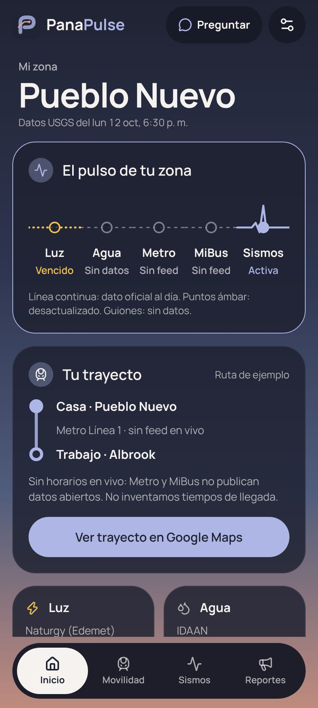
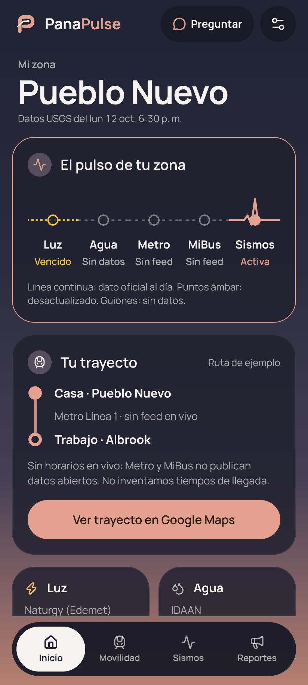
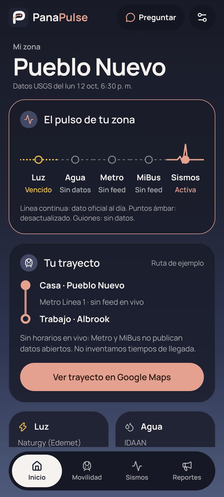
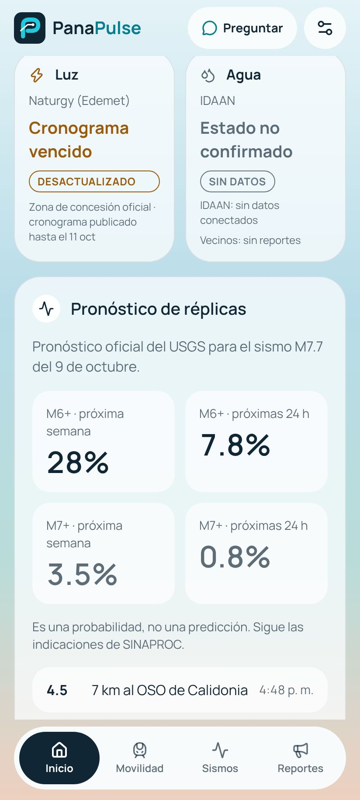
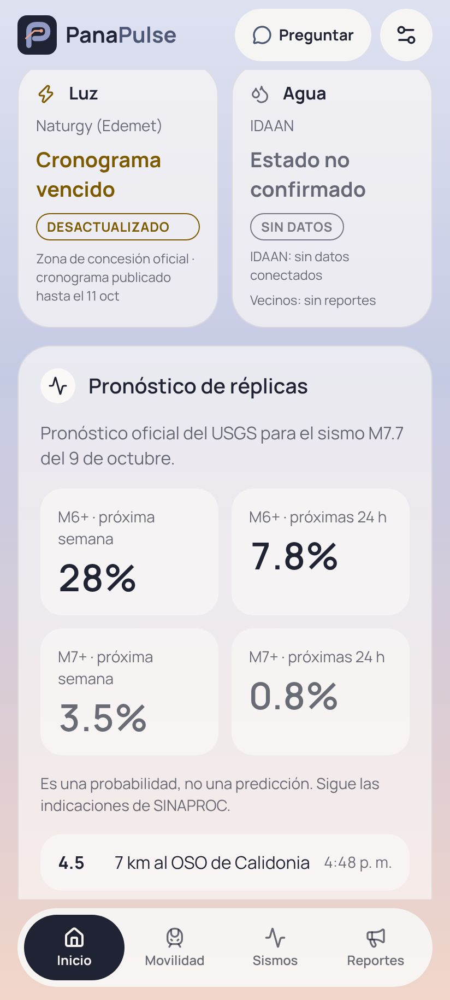
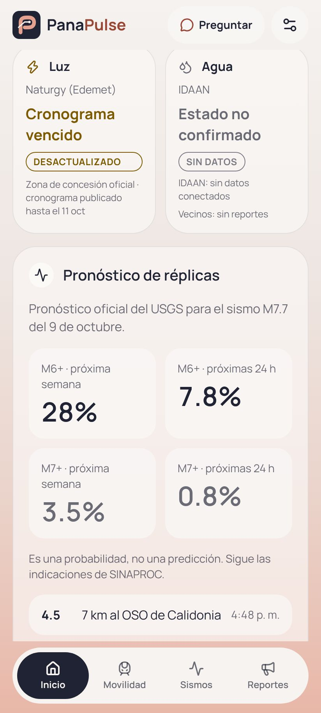
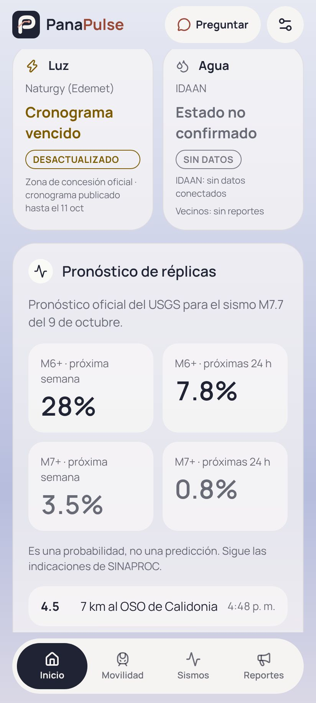
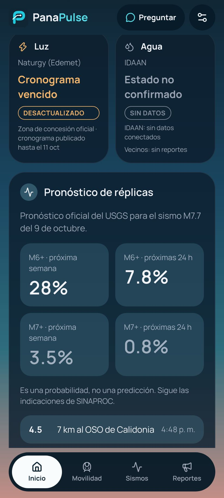
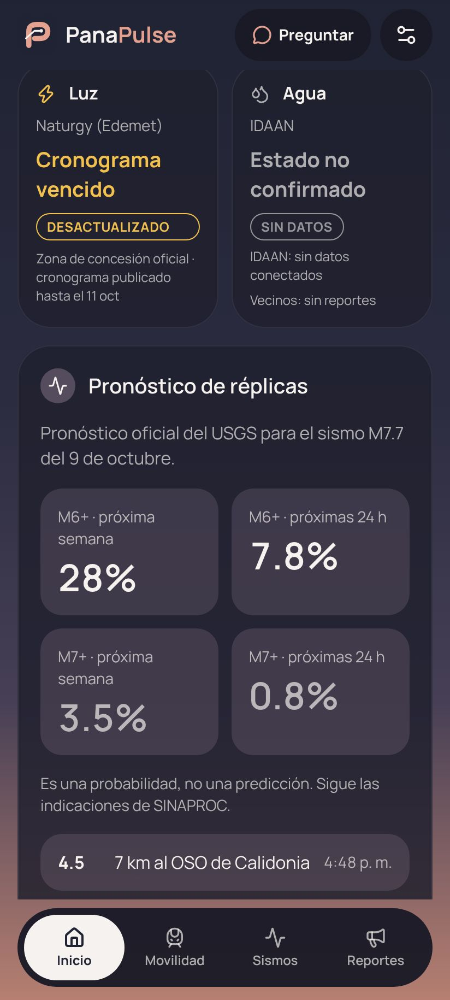
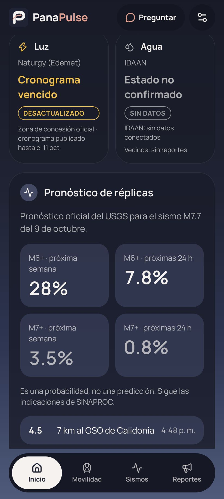
| Variation | Light sky | Dark sky | Accent | Upside | Risk |
|---|---|---|---|---|---|
| Current main | teal / cyan | Bay colors, crisp | Reads like an AI SaaS dashboard | ||
| 1 · Crepúsculo | storm / periwinkle | Richest atmosphere, calm, accent never collides with status colors | Closest to Hark's sunset | ||
| 2 · Porcelana | deep coral / coral | Warmest, most "evening in Panamá" | Light mode is cream plus terracotta, a known AI-design cliché. Coral accent sits near the alert red at night | ||
| 3 · Tinta | deep coral / coral | Least like Hark. Coral pops against the cool sky | Dark mode has no warm horizon, so it's the flattest at night |
All text on cards measures at least 4.5:1 (WCAG AA) over every gradient stop in all six combinations; the mark measures 5.1:1 or better. Checked by script, not by eye.
The connected-path P from assets/brandmark.svg, untouched. Today its three colors are hardcoded in pulse.tsx; after approval they move into brand tokens. On dark screens an ink tile disappears into the ink sky, which is why the storm-tile option is here.
Brand colors never carry status. Each state keeps its line style and a text label, so color is never the only signal.
#176A35 solid. Slightly darker green for AA on porcelain#7D5A00 dotted. Moves toward gold so it can't be confused with coral#0D6B64 dashed. Teal, because lilac would blend into periwinkle#A8322A always with an icon and the word "Alerta"#7BD88F#F2C14E#5FD4C4#FF8591, pushed pink so it reads apart from coralRead-only pass over every branch now on GitHub. Backend tests 26/26 and the TypeScript check both pass on main.
v0.2 (v0.2-original, d5d0de1) for atmosphere: the saturated four-stop dusk gradient and borderless floating cards. main (50d7cd7) is the right baseline to build on: B's layout inside v0.2's surfaces, plus the P brand. The thing main lost compared with v0.2 is the richness of the sky and the borderless depth, and both are fixable with tokens.
/v0/ask (Haiku 5.5, rate limits, cost budget), instant answers, Naturgy/ENSA concession map, ENSA and Naturgy parsers.archive/v0.3-parked./v0/ask, /v0/forecast and /healthz. No deployment, no ingest schedule.v0.2 and v0.3-parked tags aren't on GitHub (this session can't push tags).Sky, Card (with featured), CardHeader, Tile/TileGrid, StatusChip, SourceLine, Button, Txt, PulseRail, PulseMark, Header, BottomNav, Composer, the quake detail sheet, format.ts (Panama time, no DST), typed i18n, chat engine, quick answers and tools. Backend: USGS ingest, utility adapters with SourceFormatChanged, RateLimiter, revision hashing, snapshot dedupe.
#1E2740, #F4F6FB) so a palette swap actually touches everything.design/baseline/.| Change | What it does | Files | Approval |
|---|---|---|---|
| Palette | The variation you pick, tokens only | tokens.ts | This page |
| Mark colors | Brand tokens drive the P; storm tile on dark screens | tokens.ts, pulse.tsx, icons | This page |
| Card depth | Remove the 1px outline from regular cards and keep it only on the featured pulse card, like v0.2 | ui.tsx | needs OK |
| Luz and Agua status | Replace the tiny uppercase pills with a sentence-case status line at 14px, same outline style and icon. Source text goes up from 12 to 13px. Card size stays the same | Home.tsx, ui.tsx | Usability fix, no approval needed |
| Movilidad icon | Swap the robot-face train for a clearer route glyph | chrome.tsx | needs OK (navigation) |
| Two-tone wordmark | "Pana" + accent "Pulse" is a common AI tell. Option: one tone, with the P mark carrying the color | chrome.tsx | needs OK (brand) |
| Android icon | Restore the monochrome layer for themed icons | app.json, assets/ | Bug fix |
| Motion | Press feedback, pulse rail draw-in, light haptics, all off with Reduce Motion. Separate PR, later | ui.tsx, pulse.tsx | Later |
One focused branch per row, each with before/after screenshots against the baseline. Order follows your note: freeze visuals, mobility, utilities, reports, then AI.
feat/palette-tokens: chosen palette, themed mark, status colors, the approved surface fixes, all four instruction docs updated together.chore/visual-baseline: native Android screenshots of Home, Movilidad, Sismos, Reportes, Ajustes in light and dark, committed as the reference.refactor/expo-router: tabs (Inicio, Movilidad, Sismos, Reportes), with Chat and Ajustes as modal routes. Pixel-match against the baseline, so no visible change is allowed.feat/my-zone: saved corregimiento drives Home, Report, Chat and quick answers./v0/utilities, a schedule, freshness and revision tracking. The app reads the backend and falls back to its dated snapshot./v0/reports: one-tap "¿Se fue solo a mí?", corregimiento-level location only, anonymous device key, rate limits, 30-minute dedupe, "N vecinos reportaron" aggregates, and clear data deletion.